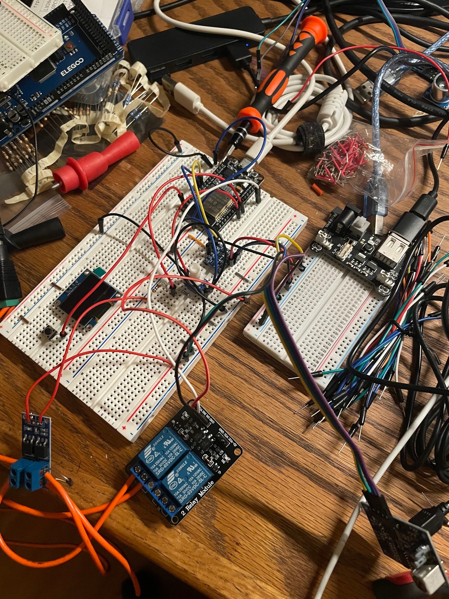
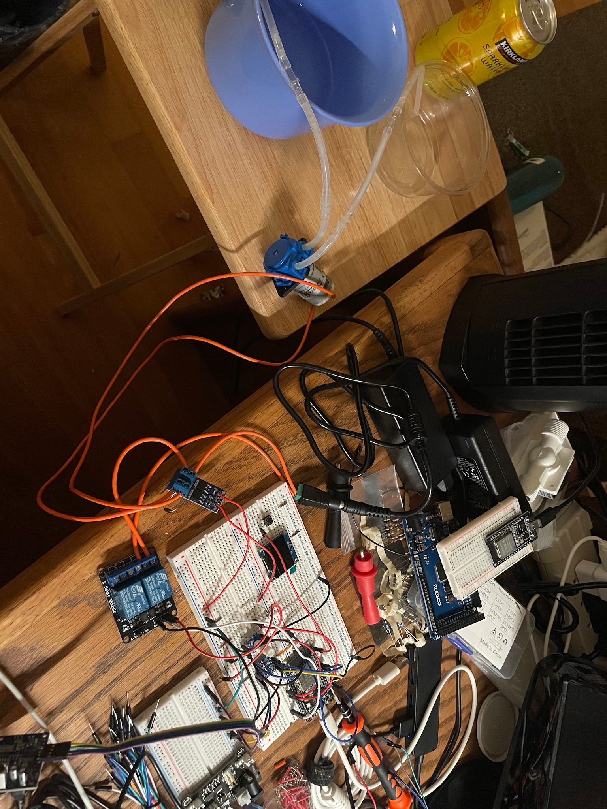
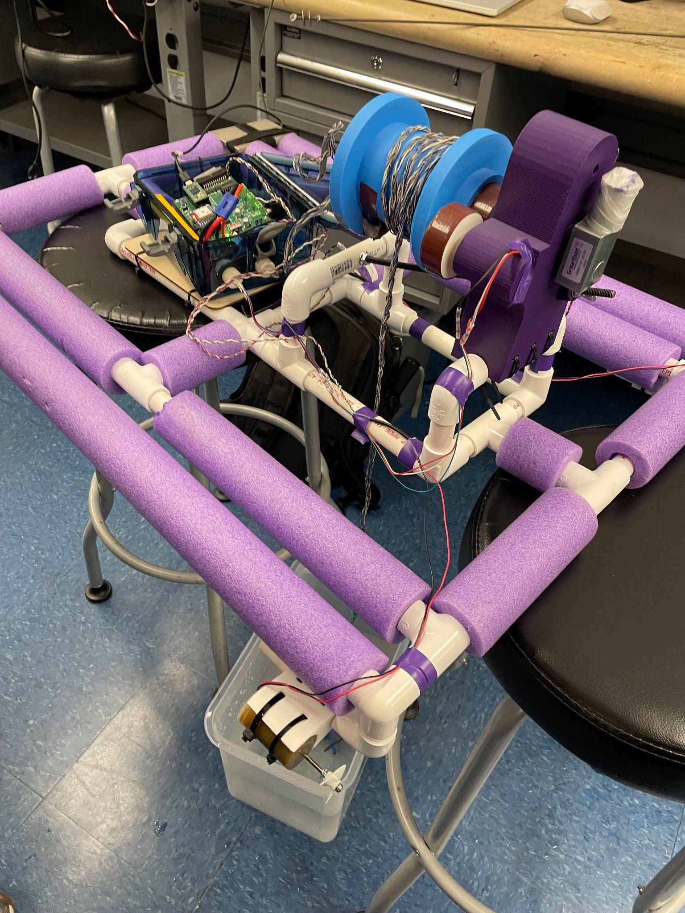
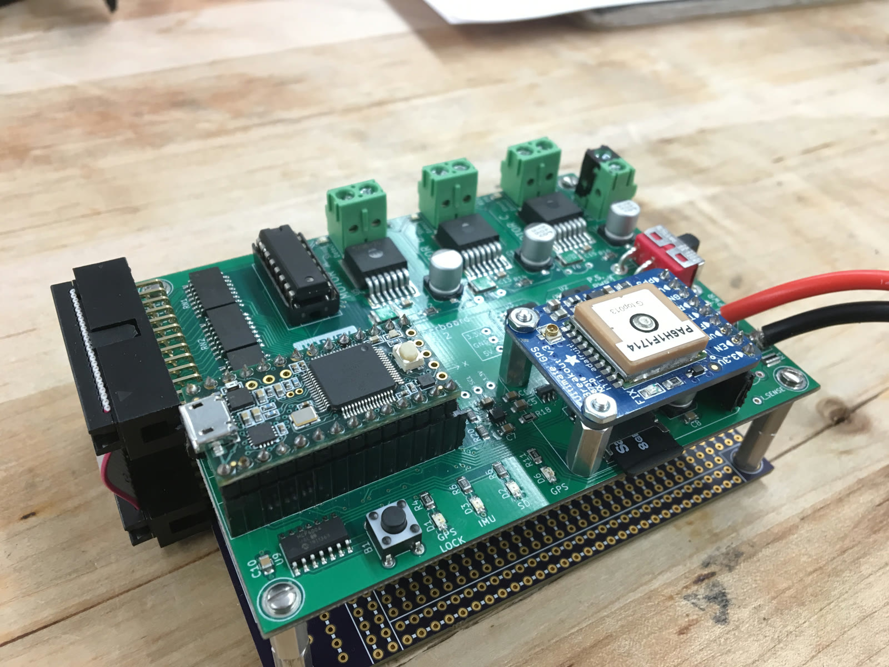
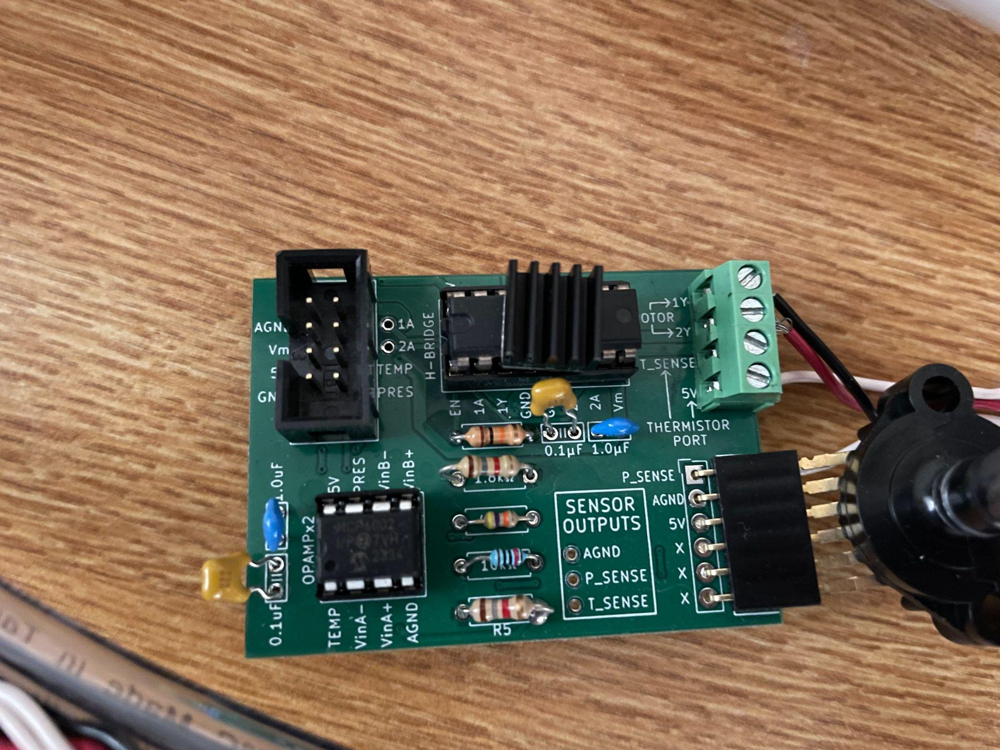
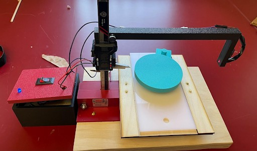
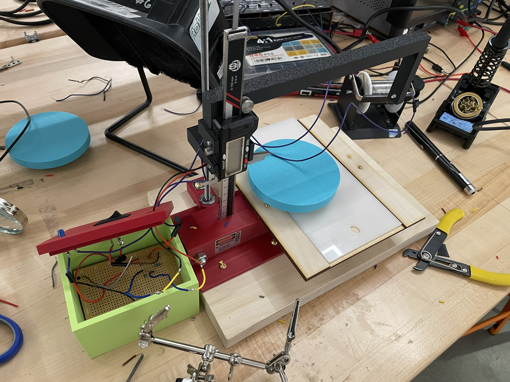
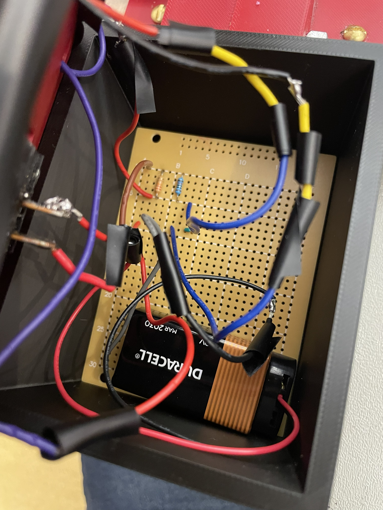
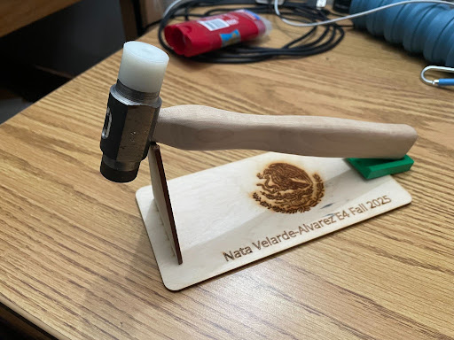
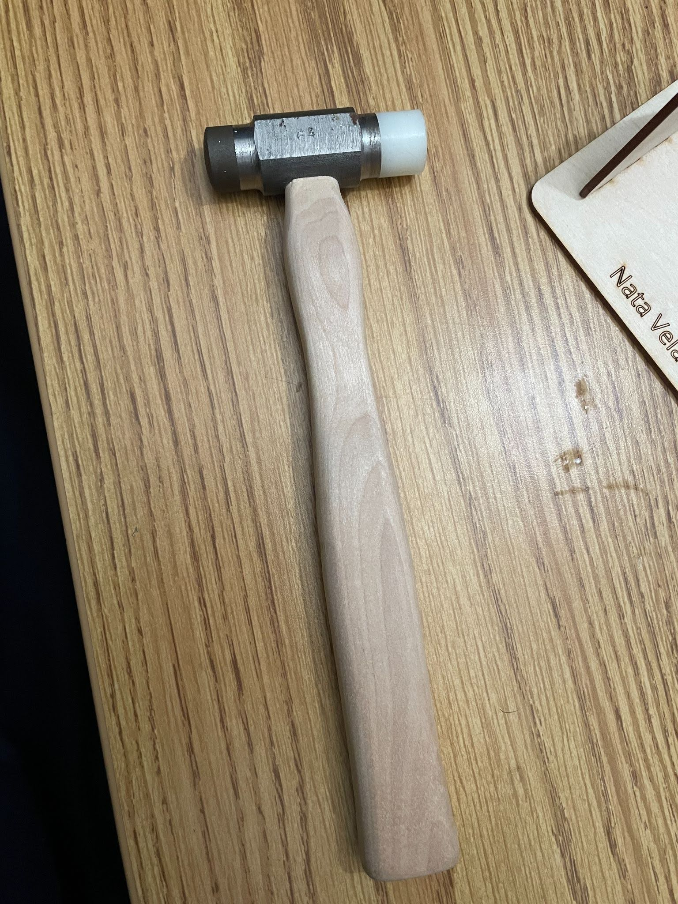

Projects
Closed-Loop Water Level Control System


Overview: I built a closed-loop water level/flow control system at home to conserve water from a leaking bucket. An ESP32 reads the sensor feedback and runs a PI control loop to regulate the pump’s flow rate under varying conditions, actuating the pump through PWM. A relay module switches pump power, and an OLED display shows the live duty cycle and volumetric flow rate. The system can also be monitored and controlled remotely over Bluetooth from a phone.
Key Contributions:
- Built the water level control system by designing a microcontroller-based electronic circuit with pump and sensing, using PWM actuation
- Implemented PI control to regulate the pump’s flow rate under varying conditions, with remote Bluetooth control from a phone
- Designed the PCB in KiCad, selected components, and organized the bill of materials
Skills: Electronics Design, Embedded C/C++, Microcontrollers (ESP32), PI/PWM Control, Sensor Integration, PCB Design (KiCad), Bluetooth Communication
Autonomous Vertical Profiling Surface Vehicle



Project Objective: Design, build, integrate, calibrate, and field test an underwater autonomous robot that measures turbidity and total dissolved solids (TDS) at different depths in clear water, lake, and ocean environments using a controlled motor-propeller and three sensors.
Project Concept: Build the vehicle with all control system components, including the mechanical structure, a water-proof electronics housing, custom instrumentation circuits for the turbidity and TDS sensors, PWM motor control for vertical descent, PID depth control with feedback, sensor data acquisition and storage, and user presets for underwater depth sampling.
In a team of 4 engineering students, we integrated a buoyant mechanical design and the electrical system in a water surface robot, then calibrated and field tested it in the lab tank room, a local lake, and at Dana Point.
Key Contributions:
- Led design of the sensor interface circuits with op-amps and potentiometers to map temperature and turbidity sensor signals to the 3.3V ADC read range
- Implemented PID control through a LabVIEW program to control the vehicle’s descent depth
- Designed PCBs for the motor driver, pressure sensor, and thermistor voltage divider, and for sensor interfacing
- Integrated the sensor electronics with a Teensy microcontroller inside a waterproof enclosure
- Built a two-tier board stack with a main motor controller board and an I/O sensor protoboard
- Assembled the mechanical frame with the electronics housing
- Calibrated sensors against industrial references and validated performance in tank, lake, and ocean testing
Skills: Electronics Design, Embedded Systems, PCB Design, PID/PWM Control, Sensor Integration & Calibration, LabVIEW, Waterproofing, Mechanical Assembly, Field Testing
Height Gauge for Microscopy Samples
Background: An Australian university lab analyzes powdered samples using an electron microscope. Our client needed a better method for measuring the height of samples between 0 mm and 30 mm: more accurate and precise than a ruler, and time efficient.



Overview: In a team of 5 students, we ideated, designed, prototyped, and tested a height gauge for measuring the microscopy samples. The design is a laser-caliper system capable of measuring within 0.01 mm of precision. I took the lead in designing the electronics and circuit for the laser detection field, a laser-photosensor detector enabling precise, non-contact height measurement for an external university client.
Key Contributions:
- Designed circuit with resistors, LED, on-off switch, low-voltage fine point laser, and photodiode to create a linear detection field
- LED indicator to indicate when sample crosses linear laser field
- Prepared drawings for 12 individual parts and full assembly, and bill of materials using SolidWorks CAD
- Improved height measurement technique by increasing precision from 0.1 mm to 0.01 mm
- Validated effectiveness with different colored powdered and solid samples
Skills: Prototyping, Circuit Design, Breadboarding, Soldering, CAD (SolidWorks), 3D Printing, Laser Cutting, Electronics Assembly, Prototype Testing
Machined Hammer


Overview: Machined a hammer with precision following specifications from technical drawings and process routers. Machined the handle using a vertical bandsaw and sanding to achieve a smooth finish. Machined the AISI 1015 steel head, AISI 4340 hard face, and nylon soft face using lathe and mill. Heat treated the hard face to achieve the desired hardness. Tolerances were checked using micrometers and calipers.
Skills: Manufacturing, Precision Machining, Tolerancing, Heat Treatment, Quality Control, Lathe, Mill, Bandsaw, Router, Sandblaster